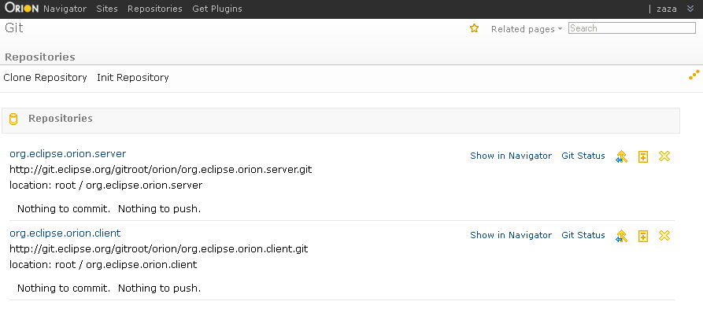

<map name="map">
	<area shape="rect" coords="33,137,206,202" href="git-clone.html" />
	<area shape="rect" coords="8,86,108,117" href="git-repositories-clone.html" />
	<area shape="rect" coords="505,14,569,46" href="navigator.html" />
	<area shape="rect" coords="573,14,604,46" href="sites.html" />
	<area shape="rect" coords="609,16,650,47" href="plugins.html" />
</map>
